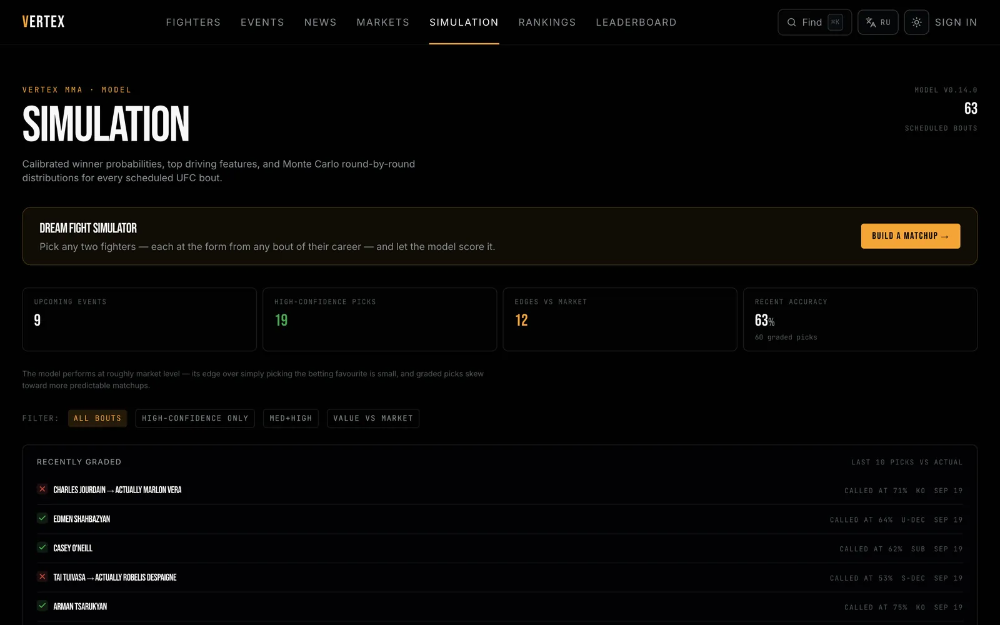

Work / 1 of 6
Vertex MMA
A nine-model UFC forecasting stack, graded against the bookmaker’s closing line on every basis, including the ones where the line wins.
- AUC on 664 bouts held out from January 2025
- 0.7244
- fighters
- 4,581
- bouts
- 8,906
- events
- 795
- simulations of every bout
- 10,000

The system
The main model picks the winner from 118 features, blending LightGBM, CatBoost and logistic regression, averaged over both orderings of the two fighters. Others handle debuts, how a fight ends and when, and a simulator plays each bout out ten thousand times.
Underneath sit 243,000 score-history rows, 49,000 official ranking snapshots, 86,000 career bouts, 41,000 round-stat rows and 31,000 judge scorecards. The site runs on Next.js and Postgres, with the models in Python.
Measured against the market
Held out from January 2025. On the 582 bouts with a price, the closing line is ahead on all three scores. The model is better calibrated than the line and less sharp; the rest of the gap is resolution, which needs information the public record does not contain.
| Measure | Model | Closing line |
|---|---|---|
| Accuracy higher is better | 0.6753 | 0.6838 |
| Log-loss lower is better | 0.6171 | 0.5922 |
| Brier lower is better | 0.2140 | 0.2035 |
On all 664 held-out bouts the model scores 0.6747 accuracy, 0.6137 log-loss, 0.2124 Brier and 0.7244 AUC.
0.7244
What never enters the model
Five separate mechanisms keep future information out of the features: history is snapshotted before it is applied, rating lookups stop strictly before the fight, ratings are replayed in date order on their own, a fighter’s career before the UFC is walked only up to the fight date, and the percentile-clipping anchor is frozen.
Bookmaker odds are stored, shown and used to grade the model, but they never enter it: a closing line would be a near-leak in a backtest. Taking them out cost 1.5 points of test accuracy, and they stayed out.
What did not ship
Roughly two dozen ideas were built, tested and rejected, and each is written up in the repository next to the ones that shipped, with the reason. Among them:
- Official UFC rankings, tried twice
- Recency weighting
- Seed bagging
- Symmetry augmentation
- A graded outcome label
- Regional fights as training rows
- Post-hoc calibration
- A submission-specific axis
One feature that had shipped was later found to leak the outcome, and was removed.
The detection floor
Five seeds on a 3,087-bout walk-forward pool put the smallest improvement this pipeline can detect, with 80% power, at 0.0036 nats. The only change ever shipped to the winner model is worth 0.0026, inside that floor. It shipped because three independent evaluation legs agreed on its sign, and the repository says so.
The papers it led to
Both of my papers grew out of evaluating this model. The first re-tests 84 hypotheses about where it might beat the market, written down before any of them was scored, as bets at the bookmaker’s own prices. It is under review at a NeurIPS 2026 workshop. The second measures the smallest improvement the model-selection pipeline can detect, and finds that retraining under another random seed reproduces 80% of the only improvement the winner model ever shipped. It is a working paper.
Both papers, figure by figurePaper one, PDFPaper two, PDF

Next.js 16, React 19, TypeScript 5.9 in strict mode, Tailwind 4, Postgres, Python 3.12, LightGBM and CatBoost. 35 routes in two languages, 1,533 translation keys each.